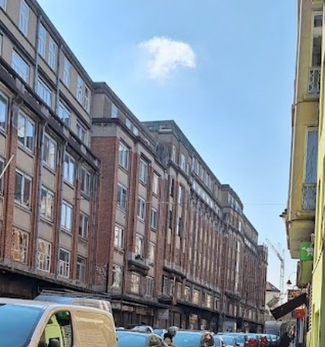

Musées royaux des Beaux-Arts de Belgique (MRBAB) Adresse : Rue de la Régence 3, 1000 Bruxelles Grand complexe fédéral qui regroupe plusieurs musées (Old Masters, Fin-de-Siècle, etc.) avec plus de 20 000 œuvres de peinture, sculpture et dessin du XVe au XXIe siècle, dont Bruegel, Rubens, Ensor, Magritte…
"Musée Magritte" Adresse : Place Royale 1, 1000 Bruxelles (intégré aux MRBAB, côté place) Musée entièrement dédié à René Magritte, présentant plus de 200 œuvres (peintures, gouaches, dessins, affiches…) et retraçant l’évolution de son surréalisme, de ses débuts aux icônes mondialement connues.
Musée Art & Histoire Adresse : Parc du Cinquantenaire 10, 1000 Bruxelles Un des plus grands musées d’art et d’archéologie d’Europe : antiquités égyptiennes, grecques et romaines, art précolombien, arts décoratifs européens, collections d’arts extra-européens, etc.
Musée des Instruments de Musique (MIM) Adresse : Rue Montagne de la Cour 2, 1000 Bruxelles Installé dans l’ancien magasin Art nouveau « Old England », le MIM expose plusieurs milliers d’instruments du monde entier, avec un audio-guide qui permet d’entendre leur son. Terrasse panoramique sur le toit avec vue sur Bruxelles. lundi Fermé mardi 09:30–17:00 mercredi 09:30–17:00 jeudi 09:30–17:00 vendredi 09:30–17:00 samedi 10:00–17:00 dimanche 10:00–17:00 https://www.mim.be/ +32 (0)2/545 01 30

Art et marges musée Adresse : Rue Haute 312–314, 1000 Bruxelles Musée dédié à l’art brut et outsider (créateurs hors des circuits artistiques classiques). Collections très fortes, expos souvent engagées et poétiques, dans le quartier des Marolles.
Villa Empain – Fondation Boghossian Adresse : Rue Claude de Bettignies 1, 1000 Bruxelles Musée dédié à l’art moderne et contemporain, avec une collection exceptionnelle de peintures, sculptures, objets décoratifs et installations.
Musée Horta Adresse : Rue Américaine 25, 1060 Saint-Gilles (Bruxelles) Ancienne maison et atelier de l’architecte Victor Horta, figure majeure de l’Art nouveau. Intérieurs d’origine (mobilier, vitraux, ferronneries) conservés, donnant une vision très complète de son style.
KBR Museum (Trésors de la Bibliothèque royale) Adresse : Mont des Arts 28, 1000 Bruxelles Musée installé au sein de la Bibliothèque royale, dédié notamment aux manuscrits des ducs de Bourgogne. Manuscrits enluminés, livres rares, plongée dans l'Europe des cours princières et l'histoire du livre.
Musée de la Ville de Bruxelles (Maison du Roi) Adresse : Grand-Place 30–32, 1000 Bruxelles Situé dans la Maison du Roi sur la Grand-Place, ce musée raconte l’histoire de Bruxelles à travers peintures, tapisseries, maquettes, documents… On y voit notamment une des versions originales du Manneken Pis.
Musée BELvue Adresse : Place des Palais 7, 1000 Bruxelles Musée consacré à l’histoire de la Belgique (monarchie, démocratie, société, période coloniale…) avec une scénographie interactive, installé dans un ancien hôtel de prestige jouxtant le Palais royal.
Porte de Hal Adresse :Boulevard du Midi 150, 1000 Bruxelles Dernière porte fortifiée subsistante des anciens remparts de Bruxelles, transformée en musée. Expositions sur le Moyen Âge, les fortifications de la ville et belles vues panoramiques depuis le sommet.
Musée Juif de Belgique Adresse : Rue des Minimes 21, 1000 Bruxelles Musée dédié à l’histoire et aux cultures juives en Belgique et en Europe. Collections d’objets religieux, œuvres d’art, archives et expositions temporaires d’art moderne et contemporain.
Musée belge de la Franc-maçonnerie Adresse : Rue de Laeken 73, 1000 Bruxelles Situé dans l’hôtel Dewez (bâtiment néoclassique XVIIIᵉ), le musée explique l’histoire, les symboles et les rites de la franc-maçonnerie en Belgique à travers objets, décorations, documents et œuvres.
Musée des Égouts de Bruxelles Adresse : Pavillons d’Octroi – Porte d’Anderlecht, Boulevard de l’Abattoir 1, 1000 Bruxelles Musée insolite qui fait découvrir le réseau d’égouts, le cours enterré de la Senne et l’histoire sanitaire de la ville. Visite partiellement souterraine, très pédagogique (maquettes, vidéos, odeur authentique 😅).
Musée des Sciences naturelles Adresse : Rue Vautier 29, 1000 Bruxelles Le grand musée de sciences naturelles de Belgique, célèbre pour sa galerie des dinosaures (iguanodons de Bernissart), ses collections de biodiversité, de géologie et d’évolution humaine.
Autoworld Brussels Adresse : Parc du Cinquantenaire 11, 1000 Bruxelles Grand musée de l’automobile installé dans une halle monumentale du Cinquantenaire, avec environ 250 véhicules : voitures anciennes, voitures de course, carrosses, expo thématiques sur l’histoire de la mobilité.
Musée royal de l’Armée et d’Histoire militaire Adresse : Parc du Cinquantenaire 3, 1000 Bruxelles Musée géré par le War Heritage Institute, dédié à l’histoire militaire belge et internationale, avec collections d’uniformes, armes, blindés et une spectaculaire halle de l’aviation remplie d’avions historiques.
Train World Adresse : Place Princesse Elisabeth 5, 1030 Schaerbeek (Bruxelles) Musée national du rail belge, combinant l’ancienne gare de Schaerbeek et des halls modernes, avec locomotives à vapeur emblématiques, trains d’époque et mise en scène immersive de l’histoire du chemin de fer. Second building au numéro 8 de la même Place
Atomium Adresse : Square de l’Atomium / Atomiumplein 1, 1020 Bruxelles (Laeken) Icône absolue de Bruxelles, construite pour l’Expo 58 : une structure de 102 m représentant un cristal de fer agrandi 165 milliards de fois, avec boules accessibles, expositions et restaurant panoramique.
Design Museum Brussels Adresse : Place de Belgique 1, 1020 Bruxelles (plateau du Heysel, près de l’Atomium) Musée consacré au design des XXᵉ–XXIᵉ siècles, avec notamment une grande collection autour du plastique et du design industriel. Expositions sur le design belge et international, mobilier, objets du quotidien, installations.
Centre Belge de la Bande Dessinée Adresse : Rue des Sables 20, 1000 Bruxelles Musée de référence dédié à la BD belge, installé dans un superbe bâtiment Art nouveau de Victor Horta (anciens magasins Waucquez). Expositions sur Tintin, les Schtroumpfs et de nombreux auteurs classiques et contemporains.
Choco-Story Brussels Adresse : Rue de l’Etuve 41 (Stoofstraat 41), 1000 Bruxelles Musée immersif consacré à l’histoire du cacao et du chocolat, des civilisations précolombiennes jusqu’à la praline belge, avec démonstrations de chocolatiers et dégustations.
GardeRobe MannekenPis Adresse : Rue du Chêne 19, 1000 Bruxelles Petit musée qui présente une sélection des centaines de costumes du Manneken Pis : tenues folkloriques, uniformes, costumes offerts par des pays ou associations du monde entier. Idéal à combiner avec la statue elle-même à deux pas.
Musée des Enfants Adresse : Rue du Bourgmestre 15, 1050 Ixelles Musée interactif pensé pour les enfants (et les accompagnants) avec des espaces de jeu éducatifs, ateliers créatifs et installations participatives. L’accent est mis sur l’expérimentation plutôt que sur des vitrines classiques.
Musée des Sciences naturelles Adresse : Rue Vautier 29, 1000 Bruxelles Le grand musée de sciences naturelles de Belgique, célèbre pour sa galerie des dinosaures (iguanodons de Bernissart), ses collections de biodiversité, de géologie et d'évolution humaine.
Train World Adresse : Place Princesse Elisabeth 5, 1030 Schaerbeek (Bruxelles) Musée national du rail belge, combinant l’ancienne gare de Schaerbeek et des halls modernes, avec locomotives à vapeur emblématiques, trains d’époque et mise en scène immersive de l’histoire du chemin de fer. Second building au numéro 8 de la même Place
Autoworld Brussels Adresse : Parc du Cinquantenaire 11, 1000 Bruxelles Grand musée de l’automobile installé dans une halle monumentale du Cinquantenaire, avec environ 250 véhicules : voitures anciennes, voitures de course, carrosses, expo thématiques sur l’histoire de la mobilité.
Choco-Story Brussels Adresse : Rue de l’Etuve 41 (Stoofstraat 41), 1000 Bruxelles Musée immersif consacré à l’histoire du cacao et du chocolat, des civilisations précolombiennes jusqu’à la praline belge, avec démonstrations de chocolatiers et dégustations.
Musée des Instruments de Musique (MIM) Adresse : Rue Montagne de la Cour 2, 1000 Bruxelles Installé dans l'ancien magasin Art nouveau « Old England », le MIM expose plusieurs milliers d'instruments du monde entier, avec un audio-guide qui permet d'entendre leur son. Terrasse panoramique sur le toit avec vue sur Bruxelles.
GardeRobe MannekenPis Adresse : Rue du Chêne 19, 1000 Bruxelles Petit musée qui présente une sélection des centaines de costumes du Manneken Pis : tenues folkloriques, uniformes, costumes offerts par des pays ou associations du monde entier. Idéal à combiner avec la statue elle-même à deux pas.
Musée des Égouts de Bruxelles Adresse : Pavillons d’Octroi – Porte d’Anderlecht, Boulevard de l’Abattoir 1, 1000 Bruxelles Musée insolite qui fait découvrir le réseau d’égouts, le cours enterré de la Senne et l’histoire sanitaire de la ville. Visite partiellement souterraine, très pédagogique (maquettes, vidéos, odeur authentique 😅).
GardeRobe MannekenPis Adresse : Rue du Chêne 19, 1000 Bruxelles Petit musée qui présente une sélection des centaines de costumes du Manneken Pis : tenues folkloriques, uniformes, costumes offerts par des pays ou associations du monde entier. Idéal à combiner avec la statue elle-même à deux pas.
Choco-Story Brussels Adresse : Rue de l’Etuve 41 (Stoofstraat 41), 1000 Bruxelles Musée immersif consacré à l’histoire du cacao et du chocolat, des civilisations précolombiennes jusqu’à la praline belge, avec démonstrations de chocolatiers et dégustations.
Musée belge de la Franc-maçonnerie Adresse : Rue de Laeken 73, 1000 Bruxelles Situé dans l’hôtel Dewez (bâtiment néoclassique XVIIIᵉ), le musée explique l’histoire, les symboles et les rites de la franc-maçonnerie en Belgique à travers objets, décorations, documents et œuvres.